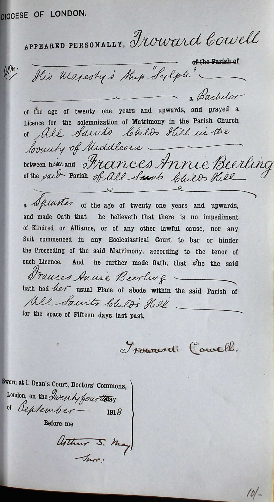
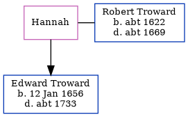

Frances Annie Cowell (née Beerling) 1891 - c1968
[ Home ] | [ Calendar ] | [ Surnames Index ] | [ Census Index ] | [ Family History ]Frances Beerling, the wife of Troward Cowell (the first cousin twice-removed on the mother's side of Nigel Horne), was born in Thanet, Kent, England on Nov 18, 18911,2,3 and married Troward (a x434 portsmouth rm police life pensioner ex royal navy with whom she had 2 children: Troward and Harold Victor Neville) in Hendon, London, England on Sep 24, 19184.
During her life, she was living at 9 Mill Row, Birchington, Kent, England on Jun 19, 19215; and at 47 Amberley Road, Portsmouth, Hampshire, England on Sep 29, 19391.
She died c. Nov 1968 in Dover, Kent, England3.
Children
- Troward was born on Jan 19, 1919
- Harold Victor Neville was born on May 22, 1920
Citations
- 1939 Register - Findmypast (was the wife of the head of the household)
- England & Wales births 1837-2006 - Findmypast
- England & Wales deaths 1837-2007 - Findmypast
- England & Wales marriages 1837-2008 - Findmypast
- 1921 Census Of England & Wales - Findmypast (was age 28 and the wife of the head of the household)
Media
Troward Cowell - Frances Beerling - Marriage Bond

England & Wales births 1837-2006 - BMD/B/1891/4/AZ/000041/361
England & Wales marriages 1837-2008 - BMD/M/1918/3/AZ/000081/095
England & Wales deaths 1837-2007 - BMD/D/1968/4/AZ/000202/120
1939 Register Transcription - TNA-R39-2257-2257I-007-10
1921 Census Of England & Wales - GBC/1921/RG15/04431/0567/01
Family Tree
Generated by ged2site. Last updated on Jun 11, 2024